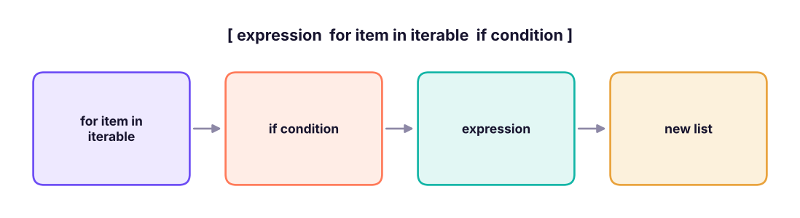

Comprehensions, Lambda, map/filter and Generators
Write compact, readable Python. Learn list, set and dict comprehensions, lambda with sorted/min/max, map and filter, any and all, generators and itertools, and when plain loops or pandas are the better choice.
- Write list, set and dictionary comprehensions with conditions and nesting
- Use lambda functions with sorted, min, max, map and filter
- Use any, all, zip, enumerate and sum with generator expressions
- Explain lazy evaluation and write generator functions with yield
- Use itertools and functools for common patterns and know when not to be clever
List comprehensions
A comprehension builds a collection from another in one expression: [expression for item in iterable if condition].

nums = [1, 2, 3, 4, 5, 6]
squares = [n * n for n in nums]
evens = [n for n in nums if n % 2 == 0]
labels = ["even" if n % 2 == 0 else "odd" for n in nums] # if/else goes BEFORE the for
loop_version = []
for n in nums:
if n % 2 == 0: loop_version.append(n * n)
print(squares, evens, labels, [n * n for n in nums if n % 2 == 0] == loop_version)[1, 4, 9, 16, 25, 36] [2, 4, 6] ['odd', 'even', 'odd', 'even', 'odd', 'even'] True
words = [" Pune ", "delhi", " KOCHI", "goa "]
print([w.strip().title() for w in words])
print([(x, y) for x in (1, 2) for y in ("a", "b")]) # two loops
matrix = [[1, 2, 3], [4, 5, 6]]
print([v for row in matrix for v in row], [list(col) for col in zip(*matrix)]) # flatten, transpose['Pune', 'Delhi', 'Kochi', 'Goa'] [(1, 'a'), (1, 'b'), (2, 'a'), (2, 'b')] [1, 2, 3, 4, 5, 6] [[1, 4], [2, 5], [3, 6]]
Set and dictionary comprehensions
print({len(w) for w in ["tea", "cup", "mug", "plate"]}) # set
prices = {"Pen": 10, "Notebook": 45, "Stapler": 180}
print({k: round(v * 1.18, 2) for k, v in prices.items()}) # dict
print({k: v for k, v in prices.items() if v > 20}, {c: ord(c) for c in "abc"}){3, 5}
{'Pen': 11.8, 'Notebook': 53.1, 'Stapler': 212.4}
{'Notebook': 45, 'Stapler': 180} {'a': 97, 'b': 98, 'c': 99}If a comprehension needs more than one condition or nested level, or does not fit comfortably on one or two lines, use a normal loop or a helper function. Clever is not the goal; clear is.
Lambda functions
A lambda is a small anonymous function: lambda args: expression.
sq = lambda x: x * x # fine to learn with, but def is better for named functions
print(sq(5), (lambda a, b: a + b)(2, 3))
people = [("Asha", 29, 62000), ("Ravi", 35, 88000), ("Meera", 31, 75000)]
print(sorted(people, key=lambda p: p[2], reverse=True)) # sort by salary
print(min(people, key=lambda p: p[1]), max(people, key=lambda p: p[2])[0])
print(sorted(["banana", "kiwi", "apple", "fig"], key=lambda w: (len(w), w))) # sort by length, then alphabet25 5
[('Ravi', 35, 88000), ('Meera', 31, 75000), ('Asha', 29, 62000)]
('Asha', 29, 62000) Ravi
['fig', 'kiwi', 'apple', 'banana']Lambdas shine as the key= for sorted, min, max, and in df.apply.
map, filter, any, all
nums = [3, 8, 12, 5, 20]
print(list(map(lambda x: x * 2, nums)), list(map(str, nums)), list(filter(lambda x: x > 6, nums)))
print([x * 2 for x in nums], [x for x in nums if x > 6]) # comprehensions say the same thing
print(any(n > 15 for n in nums), all(n > 0 for n in nums), sum(1 for n in nums if n % 2 == 0))
print(list(zip(["a", "b", "c"], [1, 2, 3])), dict(zip("abc", range(3))), list(enumerate("xyz", 1)))[6, 16, 24, 10, 40] ['3', '8', '12', '5', '20'] [8, 12, 20]
[6, 16, 24, 10, 40] [8, 12, 20]
True True 3
[('a', 1), ('b', 2), ('c', 3)] {'a': 0, 'b': 1, 'c': 2} [(1, 'x'), (2, 'y'), (3, 'z')]map and filter return lazy iterators; wrap with list(...). Most Python programmers prefer comprehensions, but you will see both.
Generators: lazy sequences
A generator expression uses parentheses and produces items one at a time, without building the whole list in memory.
import sys
big_list = [n * n for n in range(1_000_000)]
big_gen = (n * n for n in range(1_000_000))
print(sys.getsizeof(big_list) // 1000, "KB list vs", sys.getsizeof(big_gen), "bytes generator")
print(sum(n * n for n in range(1_000_000)), next(iter(big_gen)), next(big_gen))8448 KB list vs 200 bytes generator 333332833333500000 0 1
A generator function uses yield. It pauses at each yield and resumes on the next request:
def countdown(n):
while n > 0:
yield n
n -= 1
print(list(countdown(5)))
def read_in_batches(items, size):
for i in range(0, len(items), size):
yield items[i:i + size]
for batch in read_in_batches(list(range(10)), 4): print(batch)
def fib():
a, b = 0, 1
while True: # infinite sequence, safe because it is lazy
yield a
a, b = b, a + b
import itertools
print(list(itertools.islice(fib(), 12)))[5, 4, 3, 2, 1] [0, 1, 2, 3] [4, 5, 6, 7] [8, 9] [0, 1, 1, 2, 3, 5, 8, 13, 21, 34, 55, 89]
Generators are how Python reads large files line by line, streams API pages and chains pipeline steps with constant memory. Once consumed, a generator is empty:
g = (x for x in range(3))
print(list(g), list(g))[0, 1, 2] []
itertools and functools highlights
import itertools, functools, operator
from collections import Counter
print(list(itertools.chain([1, 2], [3], [4, 5])), list(itertools.combinations("ABC", 2)), list(itertools.product("AB", [0, 1])))
print(list(itertools.accumulate([10, 20, 5, 15])), functools.reduce(operator.mul, [1, 2, 3, 4, 5]))
for key, grp in itertools.groupby(sorted(["ant", "bee", "ape", "bat"]), key=lambda w: w[0]): print(key, list(grp))
@functools.lru_cache(maxsize=None) # memoise a function: remember results of earlier calls
def slow_square(n): return n * n
print([slow_square(n) for n in (4, 4, 5, 4)], slow_square.cache_info())[1, 2, 3, 4, 5] [('A', 'B'), ('A', 'C'), ('B', 'C')] [('A', 0), ('A', 1), ('B', 0), ('B', 1)]
[10, 30, 35, 50] 120
a ['ant', 'ape']
b ['bat', 'bee']
[16, 16, 25, 16] CacheInfo(hits=2, misses=2, maxsize=None, currsize=2)Real data examples
import pandas as pd
s = pd.read_csv("superstore_sales.csv", parse_dates=["order_date"])
regions = sorted(s["region"].unique())
print({r: round(float(s.loc[s.region == r, "sales"].sum()) / 1e6, 1) for r in regions}) # dict comprehension
top_customers = [c for c, n in s["customer_id"].value_counts().items() if n >= 18][:5]
print(top_customers, len([c for c, n in s["customer_id"].value_counts().items() if n >= 18]))
rows = s.head(4)[["order_id", "sales", "profit"]].to_dict("records")
print([{**r, "margin": round(100 * r["profit"] / r["sales"], 1)} for r in rows]) # enrich records
print(sorted(s["category"].unique(), key=lambda c: -s.loc[s.category == c, "sales"].sum())) # sort by a computed key{'East': 46.5, 'North': 49.0, 'South': 54.0, 'West': 52.0}
['C0719', 'C0149', 'C0126', 'C0384', 'C0257'] 21
[{'order_id': 'IN-2023-00001', 'sales': 36000.0, 'profit': 3472.55, 'margin': 9.6}, {'order_id': 'IN-2023-00001', 'sales': 3850.0, 'profit': 1169.54, 'margin': 30.4}, {'order_id': 'IN-2023-00001', 'sales': 62080.0, 'profit': 6044.47, 'margin': 9.7}, {'order_id': 'IN-2023-00002', 'sales': 5216.0, 'profit': 450.16, 'margin': 8.6}]
['Technology', 'Furniture', 'Office Supplies']Which tool when?
| Situation | Prefer |
|---|---|
| Transform or filter a small list | List comprehension |
| Sort by a rule | sorted(..., key=lambda ...) |
| Huge or streaming data | Generator (expression or function) |
| Table columns | Vectorised pandas (df["a"] * 2, np.where), not comprehensions |
| Multi-step logic with side effects | Plain for loop |
| Reuse the same transformation | Named def function |
Summary
[expr for x in it if cond]builds a list;{…}builds sets and dicts; the conditional expression (a if c else b) comes beforefor.lambdais an anonymous one-expression function, mostly used askey=and inapply.map/filterare lazy; comprehensions are usually clearer.any,all,sumwork well with generator expressions.- Generators (
( … )oryield) produce values lazily, use almost no memory and can be infinite; they can be consumed only once. itertoolsandfunctools(chain,combinations,groupby,lru_cache,reduce) cover many patterns; keep code readable and vectorise table work.
1. What does [x * 2 for x in range(4) if x != 2] give?
2. Where does an if ... else go in a comprehension?
[a if cond else b for x in it].3. What is the main advantage of a generator expression over a list comprehension?
4. What does sorted(people, key=lambda p: p[2]) do?
key supplies the sort value.5. What happens when you iterate a generator twice?
6. Which is usually best for adding a column to a DataFrame?
(1) List the squares of odd numbers from 1 to 20. (2) Build a dictionary from words to their lengths for words longer than 3 letters. (3) Flatten [[1,2],[3],[4,5,6]]. (4) Sort ["pune","Delhi","goa","Kochi"] case-insensitively. (5) Write a generator that yields only the primes below 50. (6) From the Superstore data, list sub-categories with total profit below zero.
Show solution
print([n * n for n in range(1, 21) if n % 2])
print({w: len(w) for w in ["tea", "plate", "mug", "bottle"] if len(w) > 3})
print([v for part in [[1, 2], [3], [4, 5, 6]] for v in part])
print(sorted(["pune", "Delhi", "goa", "Kochi"], key=str.lower))
def primes(limit):
for n in range(2, limit):
if all(n % d for d in range(2, int(n ** 0.5) + 1)): yield n
print(list(primes(50)))
loss = s.groupby("sub_category")["profit"].sum()
print(list(loss[loss < 0].index))Q: List comprehension vs generator expression? Both iterate with the same syntax; the list builds everything now in memory, the generator yields lazily and is single-use.
Q: When should you avoid a comprehension? When logic needs several statements, side effects, or deep nesting; readability matters more than brevity.
Q: What does yield do?
It turns a function into a generator: the function pauses, hands back a value, and resumes where it left off on the next call.
Q: How do you flatten a list of lists?
[x for sub in lists for x in sub] or itertools.chain.from_iterable(lists).
Practise more online
Free, trusted places to test yourself on this topic. Links open the original site in a new tab.